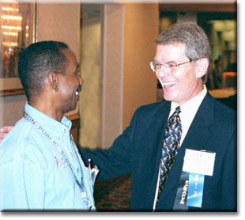
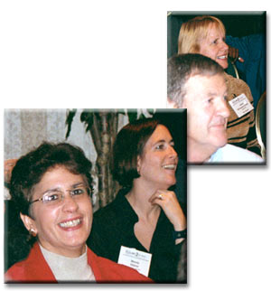
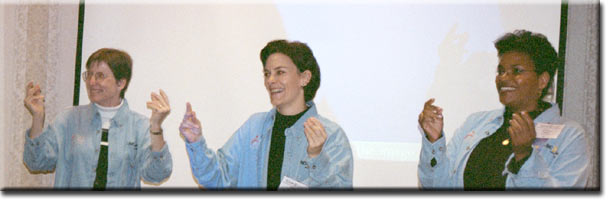
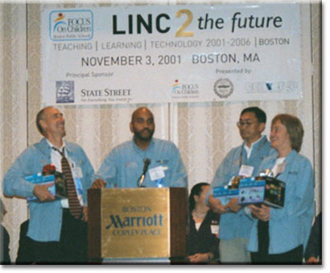

Mayor Menino with Joyce Plotkin and John Cullinane of the Mayor's LINC to the future Advisory Committee

OIT Cluster Support Specialist Isiah Floyd greets Superintendent Payzant.

Parents, teachers, administrators, students, community members and business partners participate in the Linc2 the Future Conference workshops.

Ann Goodrow, Math Coach and OIT's Diane Mustone and G'Tanya Small present "Teaching and Learning Elementary Math Investigations with Technology".

Steve Gag from the Mayor's Office, Alvin Cooper (emcee), Al Lau, OIS and Ann Grady, OIT are honored at the Linc2 the Future Conference. The digital cameras were donated to three community centers in their names
Mayor Menino with Joyce Plotkin and John Cullinane of the Mayor's LINC to the future Advisory Committee